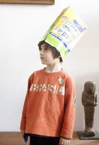

A partir de una caja de cereales se puede hacer un gorrito rápido usando tijeras y una grapadora.

Una Foto antigua de Noah :-)

A partir de una caja de cereales se puede hacer un gorrito rápido usando tijeras y una grapadora.

Una Foto antigua de Noah :-)

Vidrios rotos que se pueden encontrar en la playa dan una verdadera felicidad. Estos hemos colado a una placa de plexiglás (pistola de pegamento). Un punto…
Leer más →
Con la técnica decoupage (pegamento decoupage), hemos pegado servilletas y otros papeles finos en piedras. Nuestra experiencia, que funciona mejor con piedras claros. Así se podría…
Leer más →
Hola todos!! Ya estamos de vuelta. Poco a poco volviendo a la normalidad. :-)
Leer más →
El peluche dragon de Noah tiene ahora una caja de transporte. Hemos pintado una caja de de carton de botellas pequeñas. Como ya tiene asa lo…
Leer más →
Una nube de alambre. Los banderínes son de washi tape, doblado sobre un hilo y luego se corta la forma.
Leer más →